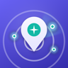

ErlebnisRadar Event eintragenKonzerte, Feste, Märkte und Partys aus deiner Region – alle in einer App, sortiert nach Umkreis.
Jede Nacht durchsucht der Radar mehrere regionale Veranstaltungsquellen und sortiert die Treffer automatisch in Kategorien ein.
Wähl deinen Ort per Name oder Postleitzahl – oder nutz deinen Standort – und stell ein, wie weit du fahren würdest. Der Radar zeigt alles im Umkreis, egal in welcher Stadt es stattfindet.
Schau, was heute Abend in der Nähe ist, oder plan gleich das ganze Wochenende durch.
Ein Modus für „jetzt sofort etwas finden“ und einer für „was geht am Wochenende?“.
Interessante Events merken – am Veranstaltungstag erinnert dich die App, damit du nichts verpasst.
Wenn du magst, zeigt dir eine Mitteilung pro Woche, was in deinen Orten und Lieblingskategorien ansteht. Mehr nicht.
Kein Konto, keine Anmeldung: Ort wählen und los. Hell oder dunkel, ganz wie du magst.
Schwerpunkt: Minden-Lübbecke, Herford, Bielefeld, Osnabrücker Land, Diepholz, Paderborn und alles dazwischen.
Gebaut von einer Person aus Rahden, in der Freizeit. Die App bleibt kostenlos und werbefrei — bezahlt werden trotzdem Datenzugänge, Server und Kartenaufrufe. Wer mag, wirft was in die Kasse.
Trag dein Event direkt hier ein – Event einreichen, ohne App – oder in der App unter Einstellungen → „Event einreichen“. Ein Foto vom Flyer reicht als Bild. Die Aufnahme ist kostenlos, nach kurzer Prüfung ist es drin.
Clubs und Bars mit festen Partynächten melden sich am besten einmal direkt: info@sasuware.de